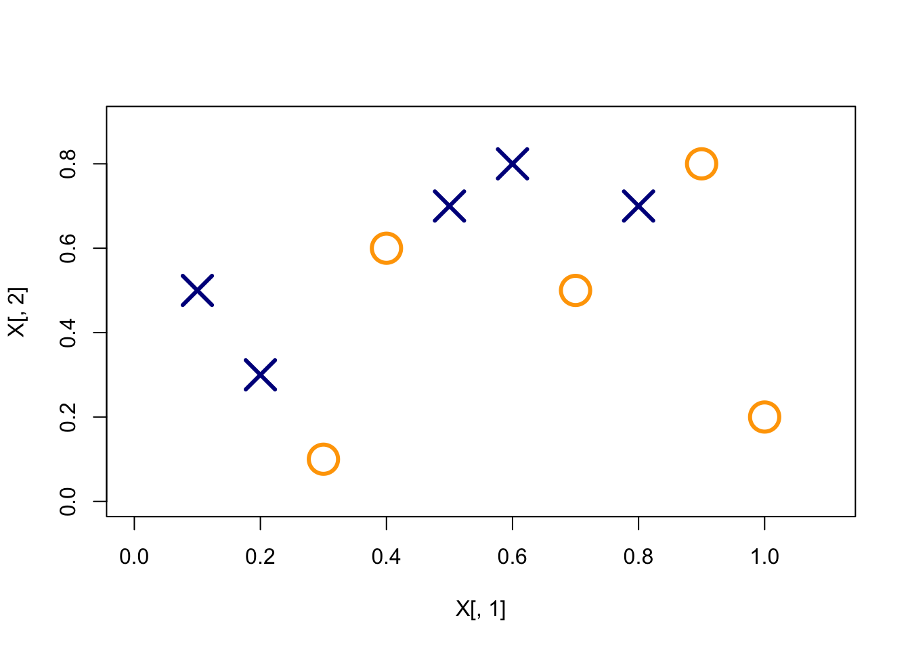
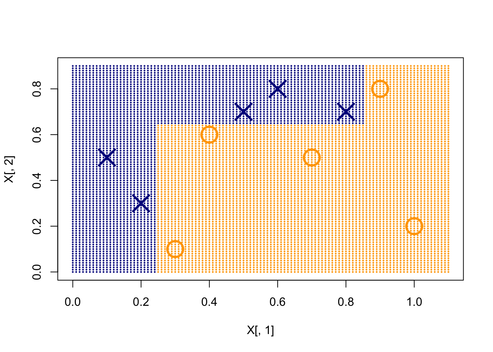
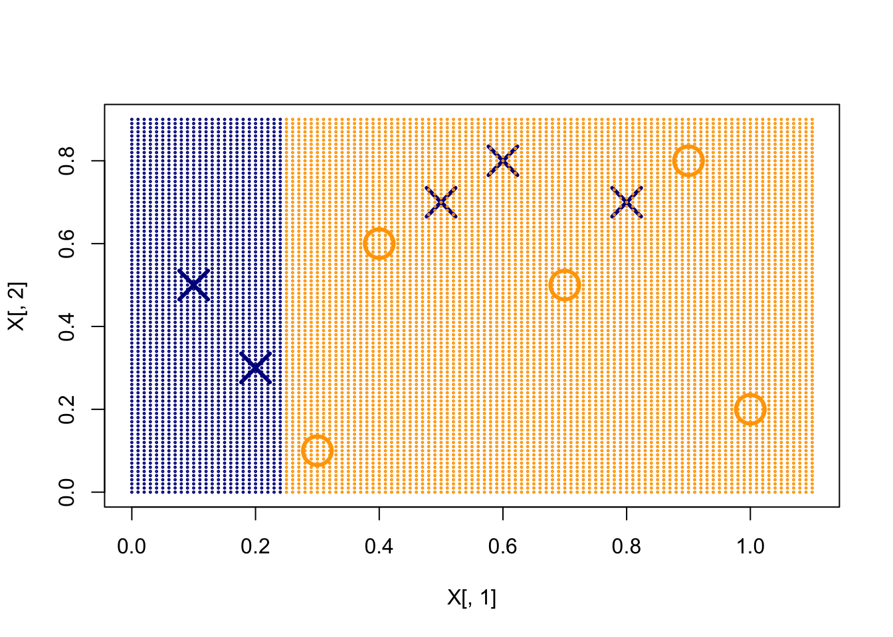
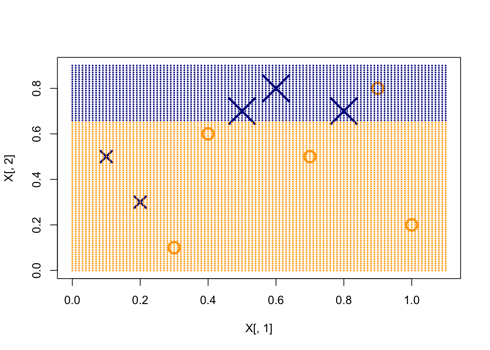
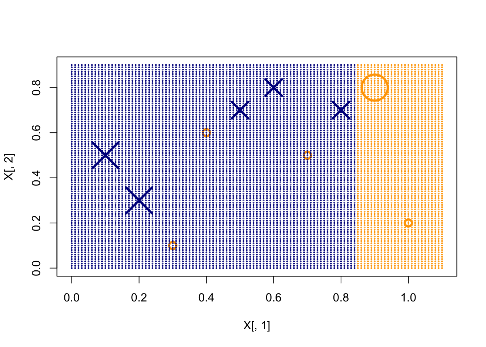
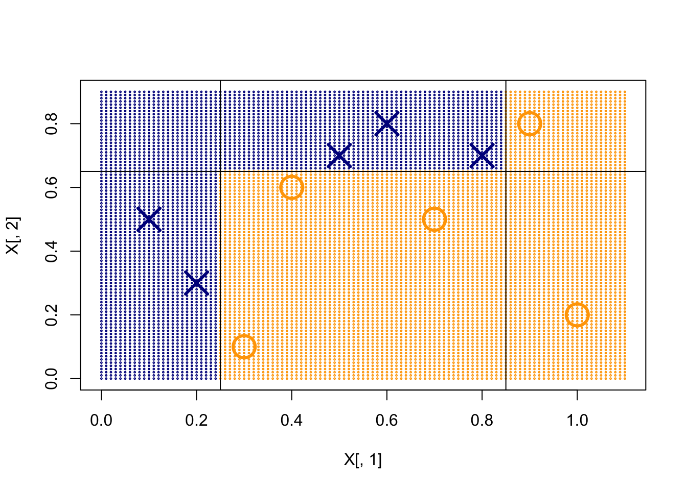
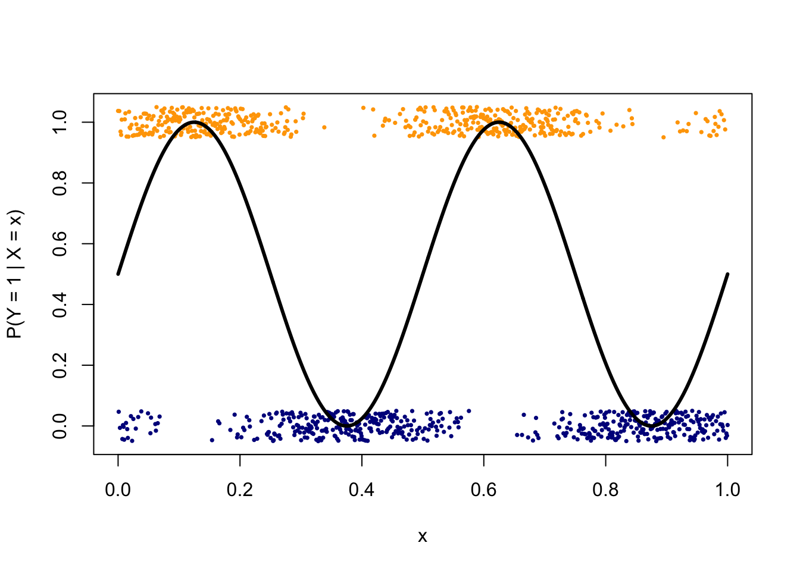
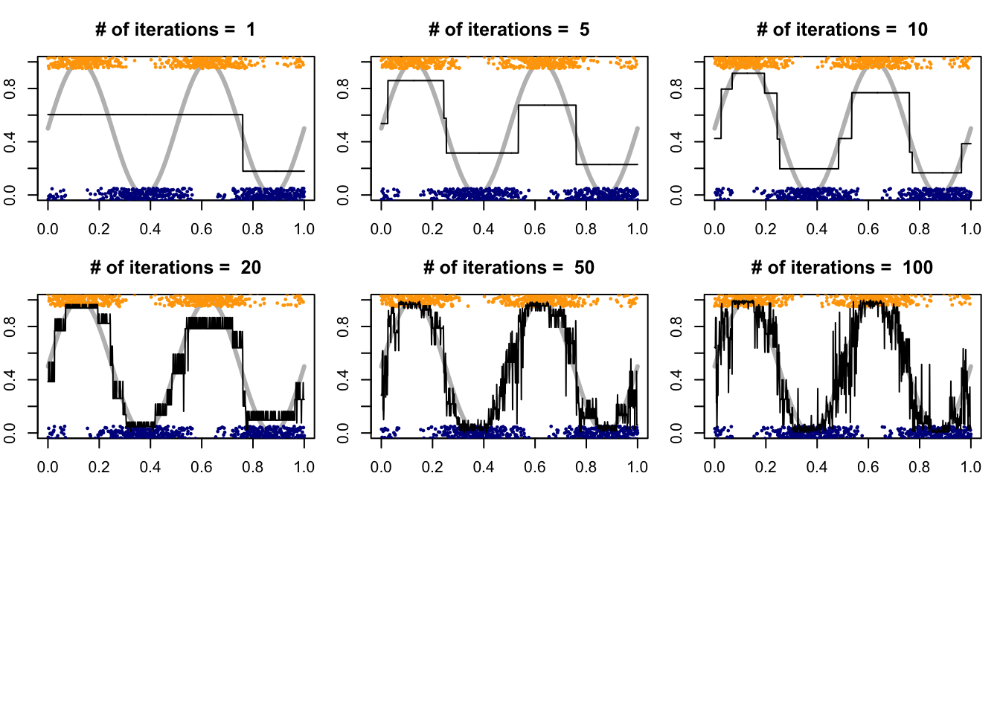
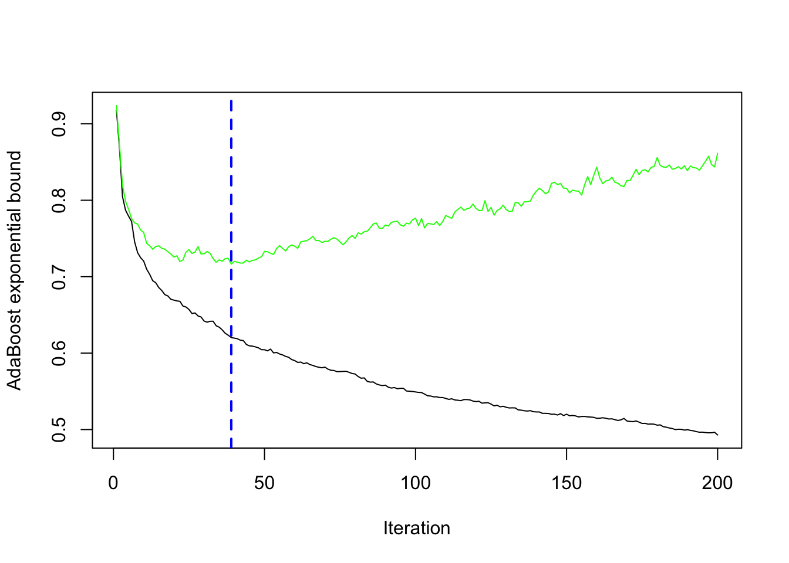

10.3 Boosting
Consider a sequence of learners added together, \[ F_T(x) = \sum_{t=1}^{T} f_t(x). \]
How should each \(f_t(x)\) be trained? At iteration \(t\), given \(f_1, \ldots, f_{t-1}\), we look for a new function \(h(x)\) that reduces the loss: \[ \min_h \sum_{i=1}^{n} L\Biggl(y_i,\; \sum_{k=1}^{t-1} f_k(x_i) + h(x_i)\Biggr). \] In boosting we typically do not add the whole \(h\). We take only a fraction of it and update the current model by \(\alpha_t h(x)\), then move to the next iteration.
Boosting is an additive model, but it is not the same as a generalized additive model, where each component is a function of a single variable. Here each \(f_t(x)\) can use several features, and we may add a large number of such terms. It is also different from a random forest, which is additive as well but grows its trees independently, so the trees cannot borrow information from one another.
10.3.1 AdaBoost
AdaBoost (Freund and Schapire, 1997) is the special case of the framework above that uses exponential loss for classification. Labels are coded as \(y_i \in \{-1, 1\}\).
AdaBoost algorithm
Initialize weights \(w_i^{(1)} = 1/n\), \(i=1,2,\ldots,n\).
For \(t=1,\ldots,T\), repeat (a)–(d):
Fit a classifier \(f_t(x) \in \{-1,1\}\) to the training data using weights \(w_i^{(t)}\).
Compute the weighted training error \[ \varepsilon_t = \sum_i w_i^{(t)} \mathbf{1}_{\{y_i \neq f_t(x_i)\}}. \]
Set \[ \alpha_t = \frac12 \log \frac{1-\varepsilon_t}{\varepsilon_t}. \]
Update the weights \[ w_i^{(t+1)} = \frac{w_i^{(t)}}{Z_t} \exp\bigl\{-\alpha_t y_i f_t(x_i)\bigr\}, \] where \(Z_t\) renormalizes the weights to a probability distribution: \[ Z_t = \sum_{i=1}^{n} w_i^{(t)} \exp\bigl\{-\alpha_t y_i f_t(x_i)\bigr\}. \]
Output \[ F_T(x) = \sum_{t=1}^{T} \alpha_t f_t(x). \] The classification rule is \(\operatorname{sign}\bigl(F_T(x)\bigr)\).
Scope of this algorithm. The version above needs labels in \(\{-1,1\}\) and a weak learner whose weighted error is below \(1/2\). It is a two-class method. Multiclass boosting uses a different algorithm (for example SAMME, or a multinomial gradient-boosted tree). Do not apply this \(\alpha_t\) update unchanged to a factor with \(K>2\) levels.
In the next example each \(f_t(x)\) is a tree with a single split. The final classifier is the weighted sum of those stumps.
x1 = seq(0.1, 1, 0.1)
x2 = c(0.5, 0.3, 0.1, 0.6, 0.7, 0.8, 0.5, 0.7, 0.8, 0.2)
y = c(1, 1, -1, -1, 1, 1, -1, 1, -1, -1)
X = cbind(x1 = x1, x2 = x2)
xgrid = expand.grid(x1 = seq(0, 1.1, 0.01), x2 = seq(0, 0.9,
0.01))
plot(X[, 1], X[, 2], col = ifelse(y > 0, "darkblue", "orange"),
pch = ifelse(y > 0, 4, 1), xlim = c(0, 1.1), lwd = 3, ylim = c(0,
0.9), cex = 3)
# Fit gbm with 3 trees
library(gbm)
gbm.fit = gbm(y ~ ., data.frame(x1, x2, y = as.numeric(y == 1)),
distribution = "adaboost", interaction.depth = 1, n.minobsinnode = 1,
n.trees = 3, shrinkage = 1, bag.fraction = 1)
pretty.gbm.tree(gbm.fit, i.tree = 1)## SplitVar SplitCodePred LeftNode RightNode MissingNode ErrorReduction Weight Prediction
## 0 0 0.25 1 2 3 2.5 10 0.00
## 1 -1 1.00 -1 -1 -1 0.0 2 1.00
## 2 -1 -0.25 -1 -1 -1 0.0 8 -0.25
## 3 -1 0.00 -1 -1 -1 0.0 10 0.00plot(X[, 1], X[, 2], col = ifelse(y > 0, "darkblue", "orange"),
pch = ifelse(y > 0, 4, 1), xlim = c(0, 1.1), lwd = 3, ylim = c(0,
0.9), cex = 3)
pred = predict(gbm.fit, xgrid)
points(xgrid, col = ifelse(pred > 0, "darkblue", "orange"), cex = 0.2)
w1 = rep(1/10, 10)
f1 <- function(x) ifelse(x[, 1] < 0.25, 1, -1)
e1 = sum(w1 * (f1(X) != y))
a1 = 0.5 * log((1 - e1)/e1)
w2 = w1 * exp(-a1 * y * f1(X))
w2 = w2/sum(w2)
# First tree
plot(X[, 1], X[, 2], col = ifelse(y > 0, "darkblue", "orange"),
pch = ifelse(y > 0, 4, 1), xlim = c(0, 1.1), lwd = 3, ylim = c(0,
0.9), cex = 3)
pred = f1(xgrid)
points(xgrid, col = ifelse(pred > 0, "darkblue", "orange"), cex = 0.2)
# Weights after the first tree
plot(X[, 1], X[, 2], col = ifelse(y > 0, "darkblue", "orange"),
pch = ifelse(y > 0, 4, 1), xlim = c(0, 1.1), lwd = 3, ylim = c(0,
0.9), cex = 30 * w2)
f2 <- function(x) ifelse(x[, 2] > 0.65, 1, -1)
e2 = sum(w2 * (f2(X) != y))
a2 = 0.5 * log((1 - e2)/e2)
w3 = w2 * exp(-a2 * y * f2(X))
w3 = w3/sum(w3)
# Second tree
plot(X[, 1], X[, 2], col = ifelse(y > 0, "darkblue", "orange"),
pch = ifelse(y > 0, 4, 1), xlim = c(0, 1.1), lwd = 3, ylim = c(0,
0.9), cex = 30 * w2)
pred = f2(xgrid)
points(xgrid, col = ifelse(pred > 0, "darkblue", "orange"), cex = 0.2)
# Weights after the second tree
plot(X[, 1], X[, 2], col = ifelse(y > 0, "darkblue", "orange"),
pch = ifelse(y > 0, 4, 1), xlim = c(0, 1.1), lwd = 3, ylim = c(0,
0.9), cex = 30 * w3)
f3 <- function(x) ifelse(x[, 1] < 0.85, 1, -1)
e3 = sum(w3 * (f3(X) != y))
a3 = 0.5 * log((1 - e3)/e3)
# Third tree
plot(X[, 1], X[, 2], col = ifelse(y > 0, "darkblue", "orange"),
pch = ifelse(y > 0, 4, 1), xlim = c(0, 1.1), lwd = 3, ylim = c(0,
0.9), cex = 30 * w3)
pred = f3(xgrid)
points(xgrid, col = ifelse(pred > 0, "darkblue", "orange"), cex = 0.2)
# Final decision rule
plot(X[, 1], X[, 2], col = ifelse(y > 0, "darkblue", "orange"),
pch = ifelse(y > 0, 4, 1), xlim = c(0, 1.1), lwd = 3, ylim = c(0,
0.9), cex = 3)
pred = a1 * f1(xgrid) + a2 * f2(xgrid) + a3 * f3(xgrid)
points(xgrid, col = ifelse(pred > 0, "darkblue", "orange"), cex = 0.2)
abline(v = 0.25) # f1
abline(h = 0.65) # f2
abline(v = 0.85) # f3
At the first iteration the stump splits \(X_1\) at \(0.25\). The misclassified positive points on the right have their weights increased. At the second iteration the stump splits \(X_2\) at \(0.65\), which updates the weights again and produces a new \(\alpha_t\). At the third iteration the stump splits \(X_1\) at \(0.85\). The stacked model is \[ F_3(x) = 0.4236\, f_1(x) + 0.6496\, f_2(x) + 0.9229\, f_3(x). \]
The intuition is simple. All observations start with equal weight. After we fit \(f_t\), the misclassified points are upweighted for the next round. We add \(\alpha_t f_t(x)\) to the current model and continue with the new weights.
A very small training error is possible, but that does not prevent overfitting. The next example shows the pattern.
# One-dimensional classification example
n = 1000
set.seed(1)
x = cbind(seq(0, 1, length.out = n), runif(n))
py = (sin(4 * pi * x[, 1]) + 1)/2
y = rbinom(n, 1, py)
plot(x[, 1], y + runif(n, -0.05, 0.05), pch = 16, ylim = c(-0.05,
1.05), cex = 0.5, col = ifelse(y == 1, "orange", "darkblue"),
xlab = "x", ylab = "P(Y = 1 | X = x)")
points(x[, 1], py, type = "l", lwd = 3)
# AdaBoost with a large shrinkage factor, to make the
# stages visible
gbm.fit = gbm(y ~ ., data.frame(x, y), distribution = "adaboost",
n.minobsinnode = 2, n.trees = 200, shrinkage = 1, bag.fraction = 0.8,
cv.folds = 10)par(mfrow = c(3, 3))
# Plot the decision function F(x), not sign(F(x))
size = c(1, 5, 10, 20, 50, 100)
for (i in 1:6) {
par(mar = c(2, 2, 3, 1))
plot(x[, 1], py, type = "l", lwd = 3, ylab = "P(Y = 1 | X = x)",
col = "gray")
points(x[, 1], y + runif(n, -0.05, 0.05), pch = 16, cex = 0.5,
col = ifelse(y == 1, "orange", "darkblue"))
Fx = predict(gbm.fit, n.trees = size[i])
lines(x[, 1], 1/(1 + exp(-2 * Fx)), lwd = 1)
title(paste("# of iterations = ", size[i]))
}
With few iterations the fit is too smooth (underfitting); with many iterations it tracks noise (overfitting). The number of trees therefore has to be chosen. One can use the out-of-bag estimate of the exponential loss, or ordinary cross-validation.
# Best number of trees from cross-validation (use method =
# 'OOB' if no CV was run)
gbm.perf(gbm.fit, method = "cv")
## [1] 39
10.3.2 Training Error Bound
A useful property of AdaBoost is the following: if every iteration produces a classifier that is better than random guessing, the training error tends to zero. To see why, unwind the weights after the last update, \[ w_i^{(T+1)} = \frac{1}{Z_T}\, w_i^{(T)}\, \exp\bigl\{-\alpha_T y_i f_T(x_i)\bigr\}. \] The same relation holds at the previous step, \[ w_i^{(T)} = \frac{1}{Z_{T-1}}\, w_i^{(T-1)}\, \exp\bigl\{-\alpha_{T-1} y_i f_{T-1}(x_i)\bigr\}, \] and so on back to the first iteration. Therefore \[\begin{align*} w_i^{(T+1)} &= \frac{1}{Z_1 \cdots Z_T}\, w_i^{(1)} \prod_{t=1}^{T} \exp\bigl\{-\alpha_t y_i f_t(x_i)\bigr\} \\ &= \frac{1}{Z_1 \cdots Z_T}\, \frac{1}{n} \exp\Bigl\{-y_i \sum_{t=1}^{T} \alpha_t f_t(x_i)\Bigr\} \\ &= \frac{1}{Z_1 \cdots Z_T}\, \frac{1}{n} \exp\bigl\{-y_i F_T(x_i)\bigr\}. \end{align*}\] The weights sum to 1, so \[ 1 = \sum_{i=1}^{n} w_i^{(T+1)} = \frac{1}{Z_1 \cdots Z_T}\, \frac{1}{n} \sum_{i=1}^{n} \exp\bigl\{-y_i F_T(x_i)\bigr\}, \] or \[ Z_1 \cdots Z_T = \frac{1}{n} \sum_{i=1}^{n} \exp\bigl\{-y_i F_T(x_i)\bigr\}. \] The right-hand side is the exponential loss. Two elementary comparisons are:
- if \(y\) and \(F(x)\) have the same sign, then \(\exp\bigl(-y F(x)\bigr) \le 1\);
- if they have opposite signs, then \(\exp\bigl(-y F(x)\bigr) > 1\).
In particular, exponential loss dominates 0–1 loss: \[\begin{align*} Z_1 \cdots Z_T &= \frac{1}{n} \sum_{i=1}^{n} \exp\bigl\{-y_i F_T(x_i)\bigr\} \\ &\ge \frac{1}{n} \sum_{i=1}^{n} \mathbf{1}_{\{y_i \neq \operatorname{sign}(F_T(x_i))\}}. \end{align*}\] Each factor \(Z_t\) can be written more explicitly. Because \(f_t(x_i)\in\{-1,1\}\), \[\begin{align*} Z_t &= \sum_{i=1}^{n} w_i^{(t)} \exp\bigl\{-\alpha_t y_i f_t(x_i)\bigr\} \\ &= e^{-\alpha_t} \sum_{y_i = f_t(x_i)} w_i^{(t)} + e^{\alpha_t} \sum_{y_i \neq f_t(x_i)} w_i^{(t)} \\ &= (1-\varepsilon_t)\, e^{-\alpha_t} + \varepsilon_t\, e^{\alpha_t}, \end{align*}\] where \[ \varepsilon_t = \sum_i w_i^{(t)} \mathbf{1}_{\{y_i \neq f_t(x_i)\}} \] is the weighted misclassification rate at step \(t\). The value of \(\alpha_t\) used by AdaBoost is exactly the choice that minimizes this \(Z_t\). Differentiating in \(\alpha_t\) gives \[ -(1-\varepsilon_t)\, e^{-\alpha_t} + \varepsilon_t\, e^{\alpha_t} = 0, \] hence \[ \alpha_t = \frac12 \log \frac{1-\varepsilon_t}{\varepsilon_t}. \] Substituting that value yields \[ Z_t = 2\sqrt{\varepsilon_t(1-\varepsilon_t)}. \] The product \(\varepsilon_t(1-\varepsilon_t)\) is at most \(1/4\), with equality only when \(\varepsilon_t = 1/2\). Thus \(Z_t < 1\) whenever the weak learner beats random guessing, and the product \(Z_1 \cdots Z_T\) is driven toward 0.
The Training Error
Write \(\gamma_t = 1/2 - \varepsilon_t\) for the edge over random guessing. Then \[\begin{align*} Z_t &= 2\sqrt{\varepsilon_t(1-\varepsilon_t)} = \sqrt{1-4\gamma_t^2} \le \exp(-2\gamma_t^2), \end{align*}\] using \(1-u \le e^{-u}\). Therefore the AdaBoost training error satisfies \[\begin{align*} \frac{1}{n}\sum_{i=1}^{n} \mathbf{1}_{\{y_i \neq \operatorname{sign}(F_T(x_i))\}} &\le \frac{1}{n}\sum_{i=1}^{n} \exp\bigl\{-y_i F_T(x_i)\bigr\} \\ &= Z_1 \cdots Z_T \\ &\le \exp\Bigl\{-2\sum_{t=1}^{T}\gamma_t^2\Bigr\}. \end{align*}\] Whenever each \(f_t\) is better than a coin flip, the right-hand side tends to 0 as \(T\) grows.
Remarks
- Does AdaBoost output a classifier \(F_T\) with small test error? Not automatically. \(T\) still has to be tuned; the algorithm can overfit.
- Does the 0–1 training error of \(F_T\) decrease at every \(T\)? Not necessarily. What decreases at each step is a particular upper bound on that error. Over a long run the training error is driven toward zero, but not monotonically.
- Can we use a classifier that is worse than random guessing? Yes. That classifier is equivalent to its reverse with \(\alpha_t < 0\).
In practice the weak learner is a classification tree (often a stump or a shallow tree). One can also read off an estimated class probability from the exponential loss. The population criterion \(E\bigl[\exp(-y F(x))\bigr]\) equals \[ e^{-F(x)}\, P(Y=1\mid x) + e^{F(x)}\, P(Y=-1\mid x). \] Setting the derivative in \(F(x)\) to zero gives \[ -e^{-F(x)}\, P(Y=1\mid x) + e^{F(x)}\, P(Y=-1\mid x) = 0, \] so the minimizer is \[\begin{align*} F(x) &= \frac12 \log \frac{P(Y=1\mid x)}{P(Y=-1\mid x)}, \qquad P(Y=1\mid x) = \frac{e^{2F(x)}}{1+e^{2F(x)}}. \end{align*}\]
10.3.3 Gradient Boosting: Forward Stagewise Additive Models
A more general additive expansion is \[ F_T(x) = \sum_{t=1}^{T} \alpha_t f(x; \theta_t), \] fitted by minimizing \[ \min_{\{\alpha_t,\theta_t\}_{t=1}^{T}} \sum_{i=1}^{n} L\bigl(y_i, F_T(x_i)\bigr). \] One chooses a loss \(L\) that matches the problem and a base learner \(f(x;\theta)\) (a linear term, a tree, ). Minimizing jointly over all \(\{\alpha_t,\theta_t\}\) is hard, so the fit is built stage by stage.
Algorithm
Set \(F_0(x) = 0\).
For \(t = 1, \ldots, T\):
Choose \(\{\alpha_t, \theta_t\}\) to minimize \[ \min_{\alpha,\theta} \sum_{i=1}^{n} L\bigl(y_i,\, F_{t-1}(x_i) + \alpha f(x_i;\theta)\bigr). \]
Update \(F_t(x) = F_{t-1}(x) + \alpha_t f(x;\theta_t)\).
AdaBoost is this procedure with exponential loss. It does not insist on an optimal \(f(x;\theta)\) at each step: any learner better than random is enough. Given that learner, the step size \(\alpha_t\) is optimized.
Another forward-stagewise example is forward-stagewise linear regression. At each step one uses a single-variable update \[ f(x,j) = \operatorname{sign}\bigl(\operatorname{Cor}(X_j, r)\bigr)\, X_j, \] where \(r_i = y_i - F_{t-1}(x_i)\) is the current residual and \(j\) indexes the predictor most correlated with \(r\). A very small step \(\alpha_t\) (for example \(10^{-5}\)) is then taken in that direction. As \(t\) varies, \(F_t\) traces a path that is nearly the lasso path.
Equivalently, \(r_i\) is the negative gradient of squared-error loss: \[ r_{it} = -\Biggl[ \frac{\partial}{\partial F(x_i)} \bigl(y_i - F(x_i)\bigr)^2 \Biggr]_{F(x_i)=F_{t-1}(x_i)}. \] One fits the weak learner \(f_t\) to these residuals and updates \(F_t\). The same idea applies to a general loss \(L\):
At iteration \(t\), compute the pseudo-residuals (negative gradient) \[ g_{it} = -\Biggl[ \frac{\partial L\bigl(y_i, F(x_i)\bigr)}{\partial F(x_i)} \Biggr]_{F(x_i)=F_{t-1}(x_i)}. \]
Fit \(f_t(x;\theta_t)\) to \(\{g_{it}\}\).
Choose a step length \[ \alpha_t = \arg\min_{\alpha} \sum_{i=1}^{n} L\bigl(y_i,\, F_{t-1}(x_i) + \alpha f(x_i;\theta_t)\bigr). \]
Update \(F_t(x) = F_{t-1}(x) + \alpha_t f(x;\theta_t)\).
Changing the outcome type then amounts to changing the loss and the implied pseudo-residuals. When the base learner is CART, one can go further and choose a separate step size in each terminal node.
10.3.4 xgboost
AdaBoost and gbm already show how a boosted classifier is trained and how \(T\) is chosen. What remains is the implementation students are most likely to meet in practice.
xgboost (Chen and Guestrin, 2016) is a fast implementation of gradient boosting with explicit regularization (lambda, alpha, max_depth, column and row subsampling) and built-in early stopping. The chunk below uses squared-error loss so the API is uncluttered. A classification fit is the same call with objective set to "binary:logistic" or "multi:softprob"; the iteration logic does not change.
set.seed(2025)
n <- 2000
p <- 15
X <- matrix(rnorm(n * p), n, p)
f_true <- function(x) 2 * sin(x[, 1]) + 0.5 * x[, 2]^2 - 1.5 * (x[, 3] > 0)
y <- f_true(X) + rnorm(n, sd = 1)
idx <- sample.int(n, floor(0.7 * n))
dtrain <- xgboost::xgb.DMatrix(X[idx, ], label = y[idx])
dvalid <- xgboost::xgb.DMatrix(X[-idx, ], label = y[-idx])
params <- list(
objective = "reg:squarederror",
eval_metric = "rmse",
eta = 0.05,
max_depth = 4,
subsample = 0.8,
colsample_bytree = 0.8,
min_child_weight = 5,
lambda = 1.0,
alpha = 0
)
watch <- list(train = dtrain, valid = dvalid)
fit <- xgboost::xgb.train(
params = params,
data = dtrain,
nrounds = 3000,
watchlist = watch,
early_stopping_rounds = 50,
verbose = 0
)## Warning in throw_err_or_depr_msg("Parameter '", match_old, "' has been renamed to '", :
## Parameter 'watchlist' has been renamed to 'evals'. This warning will become an error in a
## future version.## NULL## NULL## Feature Gain Cover Frequency
## <char> <num> <num> <num>
## 1: x1 0.52082853 0.17986857 0.13098649
## 2: x2 0.17765382 0.20785955 0.16332378
## 3: x3 0.16081670 0.10099492 0.08350389
## 4: x11 0.01634937 0.04621493 0.06221858
## 5: x14 0.01426370 0.04683192 0.06221858
## 6: x4 0.01410662 0.05919056 0.06099059
## 7: x10 0.01354525 0.03752183 0.04952927
## 8: x6 0.01240869 0.04412002 0.05771592## [1] 1.085705